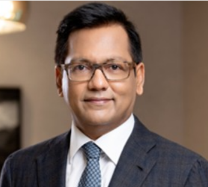

ABOUT >> OVERVIEW

It is an honor to be the Principal of Ramrao Adik Institute of Technology College, Nerul, which is considered among the best and most preferred after colleges in Navi Mumbai. Catering to the academic requirements of more than 7000 students, our college provides quality education by equipping the students with proficiency, confidence and a positive approach essential for all-around development. Following the path of our revered founder Ramrao Adik Institute of Technology College, the college is relentlessly striving to perceive and maintain academic excellence by keeping in mind social obligations.
Recently, many infrastructural developments were accomplished. New advanced instrumentation along with rising in routine ones, is helping our students and teachers to embark in the field of research with great vigor and enthusiasm. Grants from the Department of Biotechnology and Department of Science and Technology helped us to enlighten our technical aspects. Some of our departments have also started offering consultancy in the areas of their expertise and this endeavor is also gaining momentum.
the biggest challenge to the education system is unemployment or substandard employment. To increase the employability of students, the college has undertaken many initiatives. There are 29 skill-based/enrichment courses conducted by different departments to train the students and increase their employability. Students can undertake these courses parallel to the conventional courses and earn an additional qualification. Apart from this, the college conducts programs like “Campus to Corporate” and “Tata Strive” in collaboration with corporate houses to make the students job-ready.
Following the path of our revered founder Ramrao Adik Institute of Technology College, the college is relentlessly striving to perceive and maintain academic excellence by keeping in mind social obligations.As education is incomplete without research, a lot of efforts are undertaken to facilitate the research activities of students and faculty members. In all, 44 research projects have been completed and 20 research projects [major as well as a minor] funded by different agencies are going on in different departments. The faculty members along with the students have published 432 research papers [Check the number] in reputed national and international journals and proceedings of conferences.